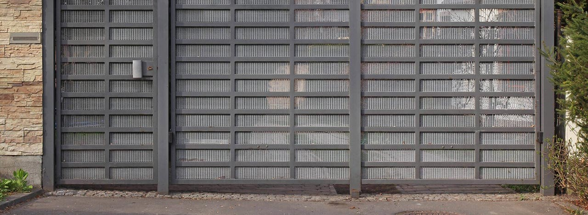
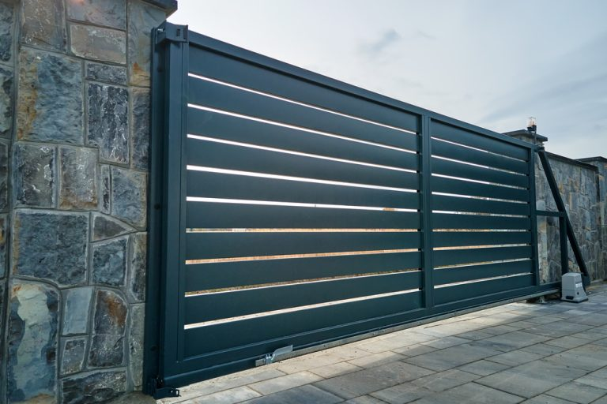
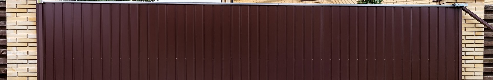
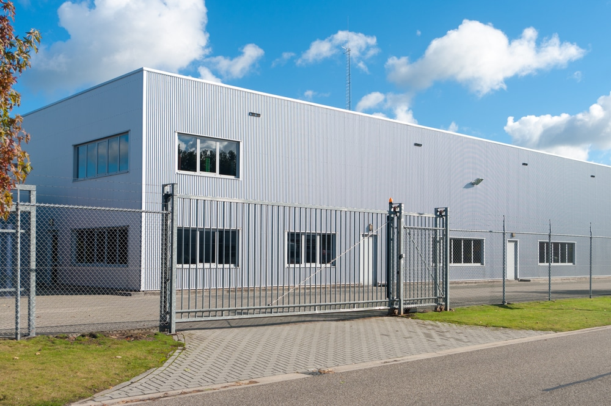
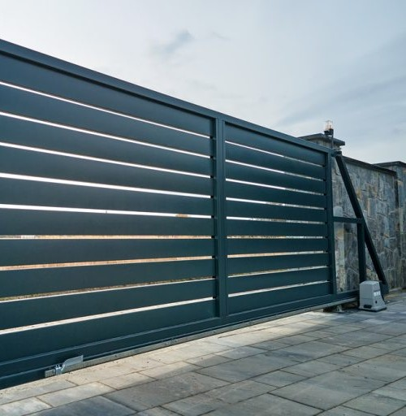

An automatic gate controls who enters your property with the touch of a button. We provide commercial automatic gates in New Orleans that protect your property while keeping access easy for authorized personnel.
A gate is an essential part of your security setup, and it improves daily operations too.

A formidable deterrent to unauthorized access that safeguards your property and assets.
You decide who enters your business premises, and you can manage and monitor access effectively.
Authorized personnel can enter and exit with ease, without manual gate operation.
An automatic gate sends a clear message that security is a top priority.
A detailed consultation comes first.
We learn about your security needs, property layout, and design preferences, then create a gate design that fits your brand and business goals.
From sturdy gate frames to reliable automation systems, our gates are built to withstand the New Orleans climate.
Access control, remote operation, and safety measures that protect your property and personnel.
From calibration to extra features.

Our skilled team installs your gate securely and calibrates it for smooth operation.

Add intercom systems, video surveillance, and emergency access controls for maximum security and convenience.

We design automatic gates with safety and local regulations in mind, for a secure and compliant addition to your property.
Your satisfaction is our top priority, and we work closely with you from the first call.
With years of experience, our team has the expertise to turn your automatic gate vision into reality.
We tailor automatic gates to your business's unique layout, security needs, and design preferences.
We take pride in meticulous workmanship, so every detail of your automatic gate is executed with precision.
We work closely with you to make sure your automatic gate meets and exceeds your expectations.
As part of the New Orleans community, we understand the needs of local businesses and design our automatic gates to match.
What business owners ask about automatic gates.
Get a free, no-obligation estimate for your business property.